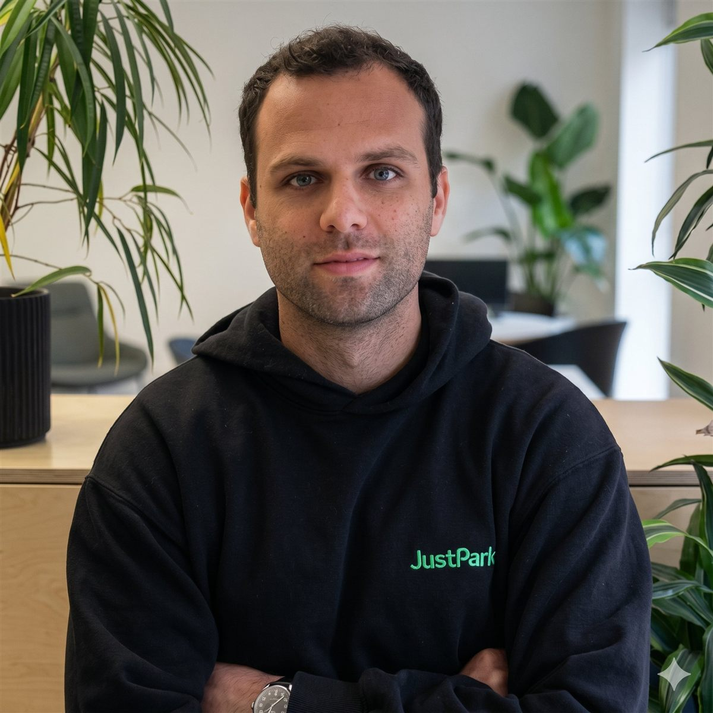

Operational AI implementation
I turn complex work into systems that hold up.
From the frontline workflow to a production release: I find the friction, frame the value and help teams put AI and automation to work.
London-based · exploring client-facing implementation and transformation roles

AI support agent
autonomously
opportunity
resolution time
Selected delivery
Evidence that starts with the work, not the buzzwords.
Three examples of operational problems taken from context and discovery through implementation, adoption and measurement.
01 / AI support agent
Support demand, absorbed without additional scaling.
Operational workflow, knowledge preparation and team adoption for a production support agent during an event-driven demand spike.
76%observed CSAT
02 / Operational automation
Found the cost hiding in a manual workflow.
SQL and operational analysis converted repeated manual effort into a shared, cross-functional delivery case.
≈£90kannualised opportunity
03 / Workflow improvement
Rebuilt the path that was slowing a team down.
An internal case-management workflow replaced spreadsheet-and-email coordination and clarified the operating path.
10 daysremoved from resolution time
Independent builds
Personal projects
Products where I take the problem all the way to something useful.
They are deliberately different from the delivery case studies: hands-on experiments in product framing, data and implementation.
01 / Product explorationMatchbound
Live application
Live application
Matchbound
A European football-trip discovery app. It starts with a fixture and turns it into a more useful way to choose a destination and plan a weekend around it.
Next.jsReactTypeScriptTailwindDrizzle ORMPostgreSQL
02 / Data productGrid / Alive
Live application
Live application
Grid / Alive
An interactive, cinematic view of Great Britain’s electricity system. It combines observed generation, demand and carbon context with regional exploration and practical household energy choices.
Next.jsReactTypeScriptMapLibreZodElexon + NESO
The approach
AI implementation is operations work.
I make sure the system fits the real workflow, has an owner and creates a result worth measuring.
- 01
Understand the real work
Shadow frontline teams, map the process and identify where time, cost or quality is being lost.
- 02
Make value specific
Define the decision rules, baseline, opportunity and success measure before choosing a solution.
- 03
Build and test the change
Translate the operating context into a scoped workflow, practical requirements and release readiness.
- 04
Embed and improve it
Train the team, monitor the result and give the people closest to the work a way to keep improving it.
About
Close to the operation. Comfortable with the technology.
My current work combines AI implementation and continuous improvement at JustPark. Before that, I delivered customer-experience and operational projects across the UK and US.
I enjoy the translation work between the lived reality of a process and the requirements that make a useful system possible.
PRINCE2 PractitionerScrum Master CertifiedBA (Hons) Economics & Business Management
View LinkedIn profile ↗Discuss a role
Let’s make the operating model work better before we make it more complicated.
I welcome conversations about client-facing AI implementation, solutions and transformation roles.